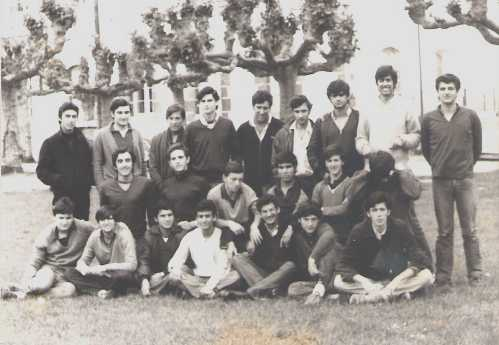

COU. curso 1979-80.- De derecha a izquierda, de pié: Panea, Tomás, Cuervo,Vara, Trascasa, Juan Carlos, Rojo y "Chano". De rodillas: Floren, "Peputo", Rubio de Paco, Iñigo, Andi y Kike. Sentados: Trascasa, Julián, yo, Néstor, Burgos, Pepín y Jorge
